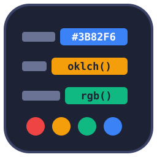
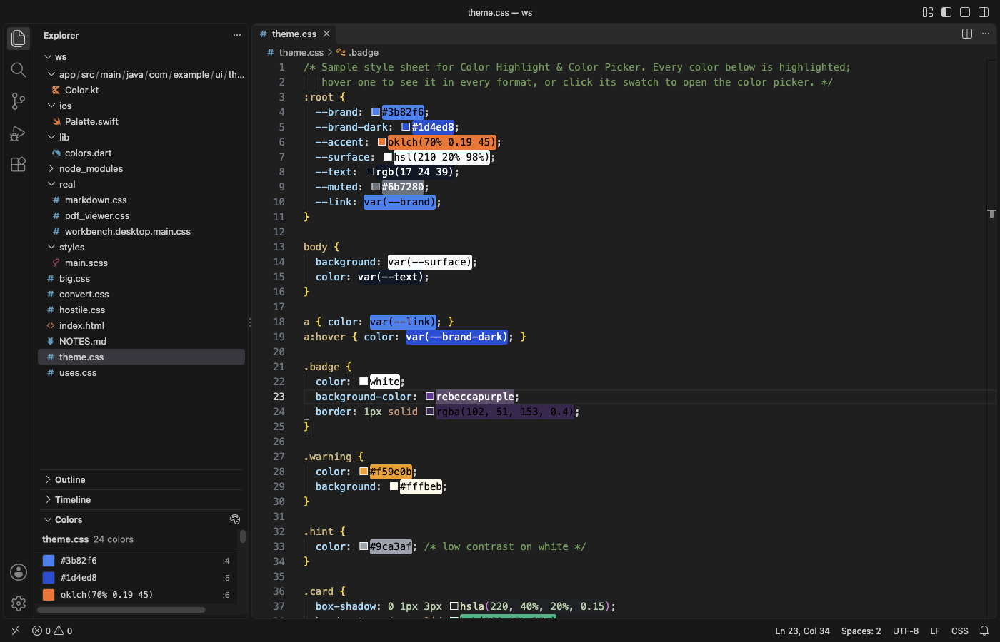
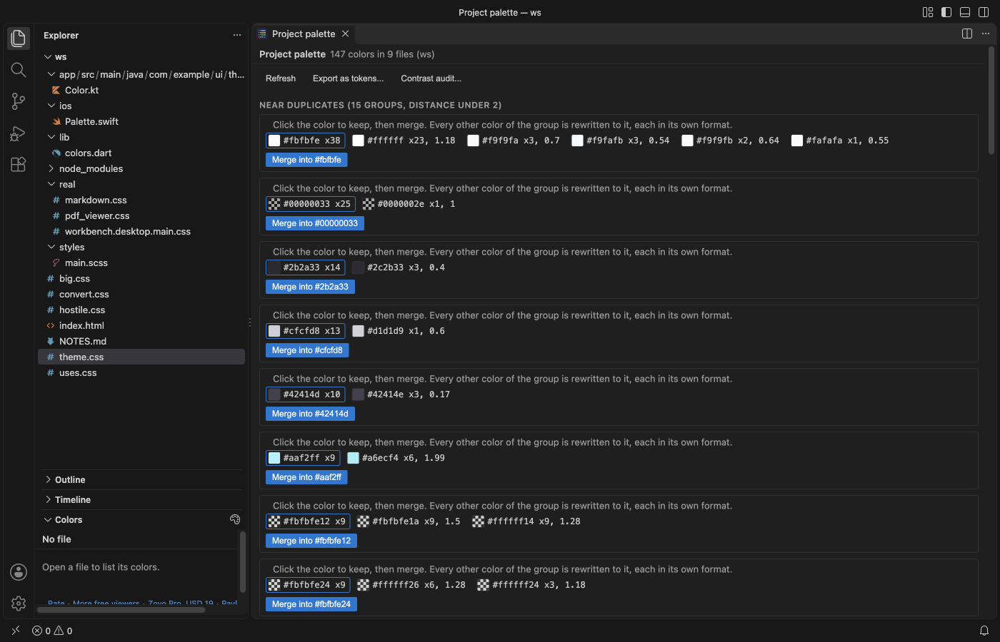

Color Highlight & Color Picker
Color Highlight & Color Picker, a VS Code extension by Zovo
See every color in your code on its own color: CSS, SCSS, LESS, HTML, JS and TS, Kotlin, Java, Dart and Swift. Hover a color to read it in every format, click its swatch to change it with the color picker. Works offline, with no account.
Free, MIT license. Needs VS Code 1.90.0 or newer. Extension ID zovo.zovo-color-highlight, version 0.1.0.

Questions people ask
Is Color Highlight & Color Picker free?
Yes. Color Highlight & Color Picker is free and MIT licensed.
How do I install Color Highlight & Color Picker?
Click "Install in VS Code" above, or search for zovo.zovo-color-highlight in the Extensions view.
Free
- Highlights
#rgb,#rrggbb,#rrggbbaa,rgb(),hsl(),hwb(),lab(),lch(),oklab(),oklch()and the 148 CSS color names, in old comma syntax and the new space syntax. - Android and Jetpack Compose
Color(0xFF6200EE)as 0xAARRGGBB (alpha first, the right way), FlutterColor.fromARGBandColor.fromRGBO, SwiftUI and UIKitColor(red:green:blue:). var(--brand), SCSS$brandand LESS@brandshow the color they resolve to, also when it is defined in another style sheet of the workspace.- VS Code's color picker on every color in every language. The picker keeps your format: hex stays hex,
0xAARRGGBBstays0xAARRGGBB. - Hover with HEX, RGB, HSL, HWB, OKLCH, Lab and the CSS name, Copy and Replace links, and the contrast ratio on white and black.
- Convert or copy the color at the cursor in any format, and a Colors list in the Explorer that jumps to each color.
- 6 styles: background, underline, border, a dot before or after, or the text in its color.
Zovo Pro
Zovo Pro: USD 19 once. One payment unlocks the Pro tools in every Zovo extension. Each Pro tool has 3 free tries:
- Project color palette: every color in the workspace with its use count, near duplicates grouped (OKLab distance), and one click to merge a group into one color across all files.
- Convert color formats in bulk: rewrite every color in a selection, a file or the workspace to HEX, RGB, HSL, HWB, OKLCH, OKLab, Lab or LCH as one undoable edit.
- WCAG contrast audit: each CSS rule's text color against its background, with the ratio and AA, AA large and AAA results in a Markdown report, worst first.
- Export palette as tokens: CSS custom properties, SCSS variables, a Tailwind theme or W3C design tokens JSON, named after your variables.
How to use it
Open any file. Colors are highlighted at once; nothing to set up. Right-click a color for Convert the Color at the Cursor, or run Color Highlight commands from the Command Palette:
| Command | What it does |
|---|---|
| Turn Highlighting On or Off | Flips the colorHighlight.enable setting |
| Convert the Color at the Cursor... | Pick a format; the color is rewritten in place |
| Copy the Color at the Cursor As... | Pick a format; it goes to the clipboard |
| Open the Color Picker Here | VS Code's color picker at the cursor, to insert a new color |
| Show the Colors of This File | Opens the Colors list in the Explorer |

Settings
colorHighlight.style:background(default),underline,border,dot-before,dot-afterortext.colorHighlight.languagesandcolorHighlight.excludeLanguages: where it highlights. Default: every language.colorHighlight.namedColors:styles(default: style sheets, HTML, Vue and Svelte, only as a value such ascolor: red),everywhere(also quoted strings such as"red"in other files) oroff.colorHighlight.argbLanguages: where an 8-digit0xnumber is a color. Default Kotlin, Java and Dart.colorHighlight.workspaceVariables: look up--name,$nameand@namein other style sheets of the workspace.colorHighlight.picker,colorHighlight.hover: turn the picker swatch or the hover off.colorHighlight.maxFileSizeKB: files larger than this (default 3000 KB) are not highlighted.
The Pro tools in use

The Pro tools are in the Command Palette (they end in "(Pro)"), in the Explorer right-click menu of style sheets and folders, and in a small row at the top of the Colors list. Each one has 3 free tries on this computer; a try counts only when the tool produced its result (Escape or Cancel never uses one). Nothing about Pro shows when you open a file. colorHighlight.showProTools: false hides all of it.
Zovo Pro is USD 19 once (team of 5: USD 59) and unlocks the Pro tools in every Zovo extension. Run Zovo Pro: Get Zovo Pro to pay by card, with GitHub Sponsors or PayPal, or to enter a key.
Privacy
No network requests and no telemetry. Files are read on your computer only: the open file for highlighting, style sheets of the workspace for the variable index, and the files the Pro tools read when you run them.
Known limits
- Colors written with a preprocessor function (
darken($x, 10%),color-mix(),rgb(from ...)) are not computed. lab(),lch(),oklab()andoklch()colors outside the sRGB range are shown clipped to sRGB; the hover says so.- The contrast audit pairs the text color and the background of the same CSS rule. It does not follow the cascade or inheritance; rules with only a text color are checked against
colorHighlight.pageBackground. - Tailwind class names such as
bg-blue-500are not highlighted.
Guides
Install Color Highlight & Color Picker
Click the button to open VS Code and install it, or press Ctrl+P (Cmd+P on macOS) in VS Code and run ext install zovo.zovo-color-highlight.
Free, MIT license. Needs VS Code 1.90.0 or newer. Extension ID zovo.zovo-color-highlight, version 0.1.0.
Source code and issues are on GitHub.
Zovo Pro and support
Zovo Pro: USD 19 once, every Zovo viewer. It turns on the Pro tools in this extension and in the other Zovo extensions you use. The free features stay free.
After a card payment your license key shows on the next page. Paste it with the command "Zovo Pro: Enter a key".
You can also support the work with no Pro:
Need your format supported?
Open a format request with a sample file, and I reply there whether it can be done. For USD 299 once, through this GitHub Sponsors tier, I add your file format or a missing feature to this extension, with tests, within 7 days.